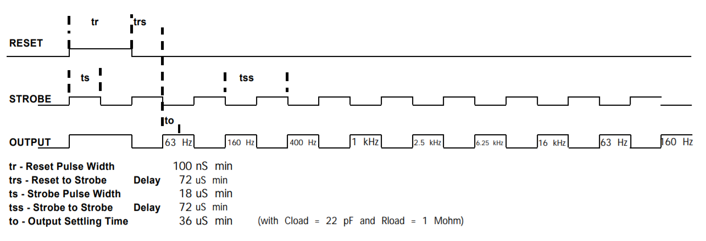

Music Reactive LEDs with MSGEQ7 & ATmega328p
2019-08-11
The Idea
Goal: to control the brightness of LEDs in proportion to the beat of the music!
First off, this project is not a unique one - it’s inspired by a sizable number of projects online - but it’s my own take.
The core function of the project depends on an IC from MSI, the MSGEQ7. It’s a seven-band equalizer filter, taking an external audio input and outputting the relative ‘loudness’ of a set of typical frequencies present. Since we can get this in near real-time, we can translate the loudness into brightness of LEDs. Simple I/O! Just need some more electronics to do it with.
For this, we’ll be using an ATmega328p microcrontroller with and Arduino bootloader. It’ll interact with the MQGEQ7 and use the output to control the gate voltage for 3 transistors. The transistors are connected to the R,G,B channels of the LED strip, which will match the Bass, Mid, and Treble of the music respectively.
The Design
First off - the MSGEQ7 support circuitry. This matches the ‘typical application’ circuit in the datasheet. Nothing to change here.
Next, the microcontroller. Support circuitry on the left, I/O on the right. All unused I/O was kept available for future use with F breakout headers.
Below, all the auxiliary circuitry.
- Power Supply: The board will use the 12V power supply that came with the LEDs, stepped down with a linear regulator to 5V for the electronics.
- Audio Input: Wiring from the audio jack to the MQGEQ7 input, as suggested by the datasheet.
- LED Strip Output: Breakout headers connecting to the LEDs, and the transistor wiring.
Making the PCB
Given this project was my first actual PCB design, there was quite the learning curve. After a bit of research, KiCad won out as the tool of choice!
In the design, grounding was a big concern. The “analogWrite” function for Arduino digital pins is really a PWM signal that averages to the desired analog output voltage. With the LED drain currents at roughly 2-4A, this creates a lot of noise. If these currents were sunk to ground near the sensitive analog audio currents it would create enough interference to render the design worthless. This was noticed during breadboard testing of the circuit.
In consideration, the goals in the design process were:
- Physically separate the digital PWM and analog circuitry
- Run most traces on the top layer, to make a bottom ground plane as continuous as possible
- Allow for it to be reprogrammed on-board
- Keeping the board open to future improvements by including breakouts for unused ATmega pins
- Having it be small!

Eventually, this is the design that was reached! Analog and Digital are separate on the board, running back to the power supply without crossing over. In breaking out analog pins 1-5 with traces on the bottom, it acts as a further barrier between the two. Eventually coming to this scheme put the grounding worries to rest.
To keep the board small and to test my soldering, all SMD components were an 805 footprint and all capacitors were ceramic.
The Code
Before the PCB’s arrived, I managed to get the base schematic working on a breadboard. Nice. So, I got to coding.
As is shown in the earlier figure - it takes in an audio input, and gives a DC output corresponding to the relative ‘loudness’ of a set of frequencies present. The microcontroller drops the STROBE pin low to shift a multiplexer through outputting each of the different frequencies.
Timing diagram shown below.

Alright, so we now have the output of the chip. What to do with it? Turns out if you directly map the output to gate voltages, the result is quite epileptic. So, I added a signal floor and a moving average filter to smoothen things out.
If you’ve come this far, I’ll just let you look at the code. Have fun!
// Program parameters
#define avg 8 // Window of moving average filter
int thres = 25; // Threshold to activate channel
double redScalar = 1.25; // Red multiplier
double bluScalar = 1.4; // Blue multiplier
double grnScalar = 0.8; // Green multiplier
// Configuration
int analogPin = 0; // A0
int strobePin = 2; // D2
int resetPin = 3; // D3
int redPin = 10; // D10
int grnPin = 11; // D11
int bluPin = 9; // D9
int spectrumValue[7];
int val[3] = {0,0,0};
int pins[3] = {redPin,grnPin,bluPin};
double scalar[3] = {redScalar,grnScalar,bluScalar};
int prevVal[avg][3];
void setup(){
Serial.begin(9600);
pinMode(analogPin, INPUT);
pinMode(strobePin, OUTPUT);
pinMode(resetPin, OUTPUT);
analogReference(DEFAULT);
digitalWrite(resetPin, LOW);
digitalWrite(strobePin, HIGH);
LightStartup();
delay(20);
for(int p = 0; p < 3; p++){
for(int v = 0; v < avg; v++){
prevVal[v][p] = 0;
}
}
}
void loop(){
digitalWrite(resetPin, HIGH);
digitalWrite(resetPin, LOW);
for (int i = 0; i < 7; i++){
digitalWrite(strobePin, LOW);
delayMicroseconds(30); // to allow the output to settle
spectrumValue[i] = analogRead(analogPin);
//PrintValue(spectrumValue[i]);
digitalWrite(strobePin, HIGH);
}
val[0] = map(spectrumValue[0], 0, 1023, 0, 255);
val[1] = map(spectrumValue[3], 0, 1023, 0, 255);
val[2] = map(spectrumValue[6], 0, 1023, 0, 255);
// For each channel value
for(int p = 0; p < 3; p++){
// Set to 0 if output below a threshold
if(val[p] < thres) val[p] = 0;
// Multiply by channel scalar (Goal: Boost Red & Blu, subdue Grn)
double d = val[p];
d *= scalar[p];
val[p] = (int) d;
// Shift the Value history back one entry
for(int v = 0; v < avg-1; v++) prevVal[v][p] = prevVal[v+1][p];
prevVal[0][p] = val[p];
// Adjust the value according to a moving average of past X samples
int tmp = 0;
for(int v = 0; v < avg; v++) tmp += prevVal[v][p];
val[p] = tmp/avg;
PrintValue(val[p]);
}
Serial.println();
// Write the outputs
for(int p = 0; p < 3; p++) analogWrite(pins[p],val[p]);
delay(10);
}
void PrintValue(int val){
if (val < 10){
Serial.print(" ");
Serial.print(val);
}
else if (val < 100){
Serial.print(" ");
Serial.print(val);
}
else{
Serial.print(" ");
Serial.print(val);
}
}
void LightStartup(){
for(int p = 0; p < 3; p++){
for (int i = 0; i < 255; i++){
analogWrite(pins[p], i);
delay(1);
}
for (int i = 255; i > 0; i--){
analogWrite(pins[p], i);
delay(1);
}
}
}
If you have any questions, feel free to reach out.
Feel free to check out the source on GitHub!